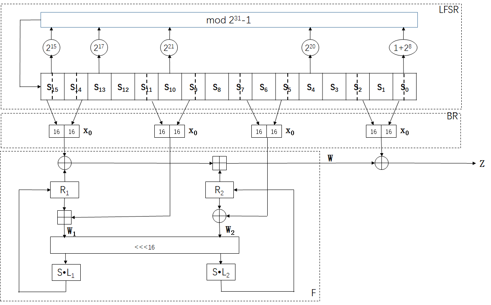

| 序号 | 页码 | 原文 | 修改 | 说明 |
|---|---|---|---|---|
| 1 | P.14 |
机密性 (Confidentiality)：保护信息不被泄露或暴露给未授权的实体。 完整性 (Integrity)：保护数据防止未授权的改变、删除或替代。 非否认 (Non-repudiation)：防止参与某次通信交换的一方事后否认本次交换 曾经发生过。 可认证 (Authentication)：提供某个实体（人或系统）的身份的保证。 访问控制 (Access control)：保护资源以免对其进行非法使用或操纵。 |
机密性 (Confidentiality)：保护信息不被泄露或暴露给未授权的实体。 完整性 (Integrity)：保护数据防止未授权的改变、删除或替代。 可用性 (Availability): 信息在需要时能够获取。 非否认 (Non-repudiation)：防止参与某次通信交换的一方事后否认本次交换 曾经发生过。 可认证 (Authentication)：提供某个实体（人或系统）的身份的保证。 访问控制 (Access control)：保护资源以免对其进行非法使用或操纵。 |
印刷版漏掉了“可用性”，CIA中的A |
| 2 | P201 | 图A.1 |  | |
| 3 | P82 | 例6.3 | 答案应为：X=(0,0,1,0,1,0,0,0) | |
| 4 | P82 | 例6.3 | 答案应为：X=(1,1,0,1,0) | |
| 5 | P42 | 通常找一个素多项式是一个困难问题，通常都会查表。 | 这句话错误，因为在有限域上，存在多项式时间算法，如Shoup算法，寻找素多项式，所以这不是一个困难问题。所以删掉这句话。 | |
| 6 | P61 | 分组大小：分组越大意味着安全性越高 ，但加密/解密速度也越慢。64 比特分组大小是比较合理的，在分组密码设计中他几乎是个通用的数值。 | 目前因为计算能力越来越高，这句话修订一下： 分组大小：分组越大意味着安全性越高 ，但加密/解密速度也越慢。64 比特分组大小是比较合理的，在早期分组密码设计中他几乎是个通用的数值。 |
|
| 7 | P61 | 如果算法能够简洁地解释清楚，那么就很容易通过分析算法而找到密码分析上的弱点，进而能够对其牢固程度有更大信心。例如，DES 这个算法的功能原理就不容易分析。 | 进行修订，描述更严谨： 如果算法能够简洁地解释清楚，那么就很容易对算法进行分析，进而能够对其牢固程度有更大信心。 |
|
| 8 | P82 | 例 6.3的解部分X=(0,1,0,1,0,0,0,0) | 修改为：X=(0,0,1,0,1,0,0,0),以上计算过程相应修改部分是，v3=1，v4=0，v5=1 | |
| 9 | P82 | 例 6.4的解部分X=(0,1,0,1,0) | 修改为：X=(1,1,0,1,0) | |
| 10 | P88 | 2.选一个正整数d，满足 gcd(d,mod(𝜙(n))=1. 3. 计算 d 模 𝜙(n) 的逆元 e，也就是说 ed=1(mod(𝜙(n)). |
2.选一个正整数e，满足 gcd(e,mod(𝜙(n))=1. 3. 计算 e 模 𝜙(n) 的逆元 d，也就是说 ed=1(mod(𝜙(n)). |
|
| 11 | P100 | 目前大多数哈希函数的结构都采用 Merkle-Damgåard 结构 | 目前大多数哈希函数的结构都采用 Merkle-Damgård 结构 |